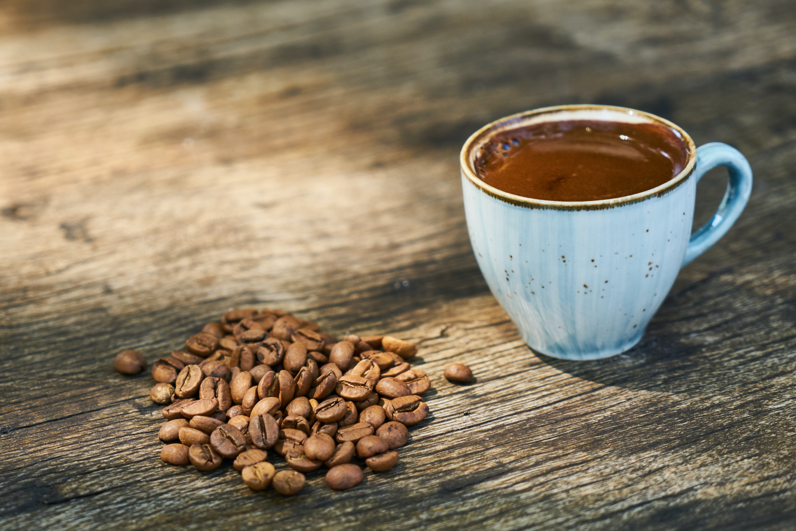

Coffee & Co.
Coffee is a brewed drink prepared from roasted coffee beans, the seeds of berries from certain Coffea species. From the coffee fruit, the seeds are separated to produce a stable, raw product: unroasted green coffee. The seeds are then roasted, a process which transforms them into a consumable product: roasted coffee, which is ground into fine particles that are typically steeped in hot water before being filtered out, producing a cup of coffee.
History
Coffee grown worldwide can trace its heritage back centuries to the ancient coffee forests on the Ethiopian plateau. There, legend says the goat herder Kaldi first discovered the potential of these beloved beans. The story goes that that Kaldi discovered coffee after he noticed that after eating the berries from a certain tree, his goats became so energetic that they did not want to sleep at night. Kaldi reported his findings to the abbot of the local monastery, who made a drink with the berries and found that it kept him alert through the long hours of evening prayer. The abbot shared his discovery with the other monks at the monastery, and knowledge of the energizing berries began to spread. As word moved east and coffee reached the Arabian peninsula, it began a journey which would bring these beans across the globe.
Turkish Coffee
Turkish coffee refers to a method of brewing very finely ground coffee. Any coffee bean may be used; arabica varieties are considered best, but robusta or a blend is also used. The beans must be ground to a very fine powder, which is left in the coffee when served.
Esspresso
Espresso is among the most common types of coffee drink in the world. The Espresso comes with different variations and changes across countries. However, this coffee is a highly concentrated one as such and is a straightforward choice. The coffee initially originated from Italy and is prepared by forcing pressure steam from the beans. So the final coffee drink product comes as a very thick one in texture and hence also has high levels of caffeine. It is the most popular varieties of coffee drinks.